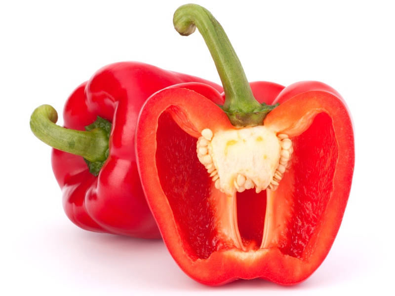

☰ open
Ingredienten van de Burito's
- 1 pak Santa Maria Original Soft Tortillas
- 1 zakje Santa Maria Burrito Seasoning Mix
- Santa Maria Taco Sauce Mild
- 400 g rundvlees, in reepjes
- 1 eet lepel boter of olie
- 1 paprika
- Guacemole
- Sla, in fijne reepjes gesneden
- Tomaten, in blokjes
- Geraspte kaas
